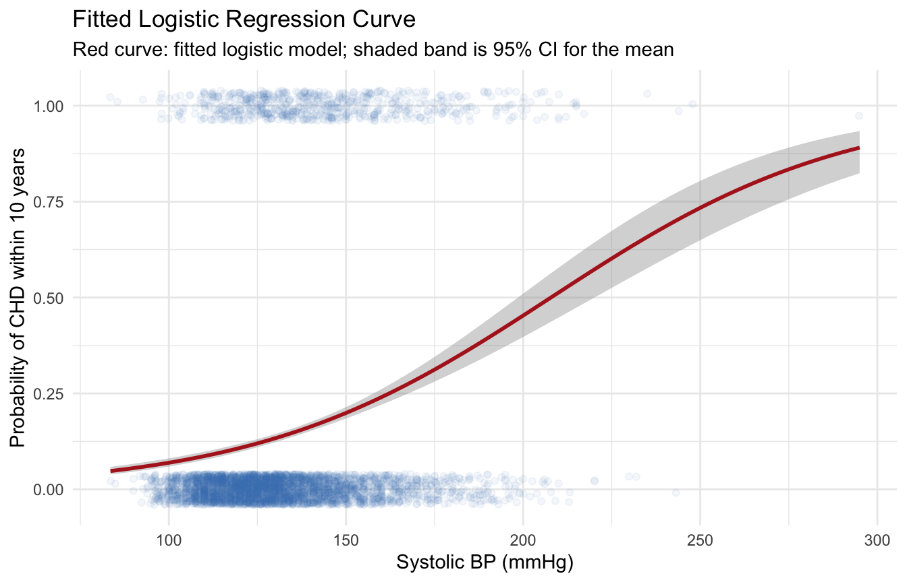
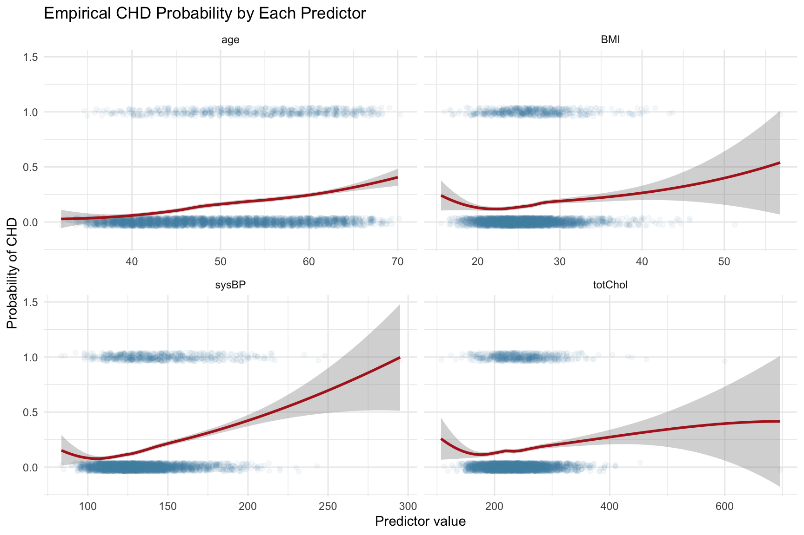
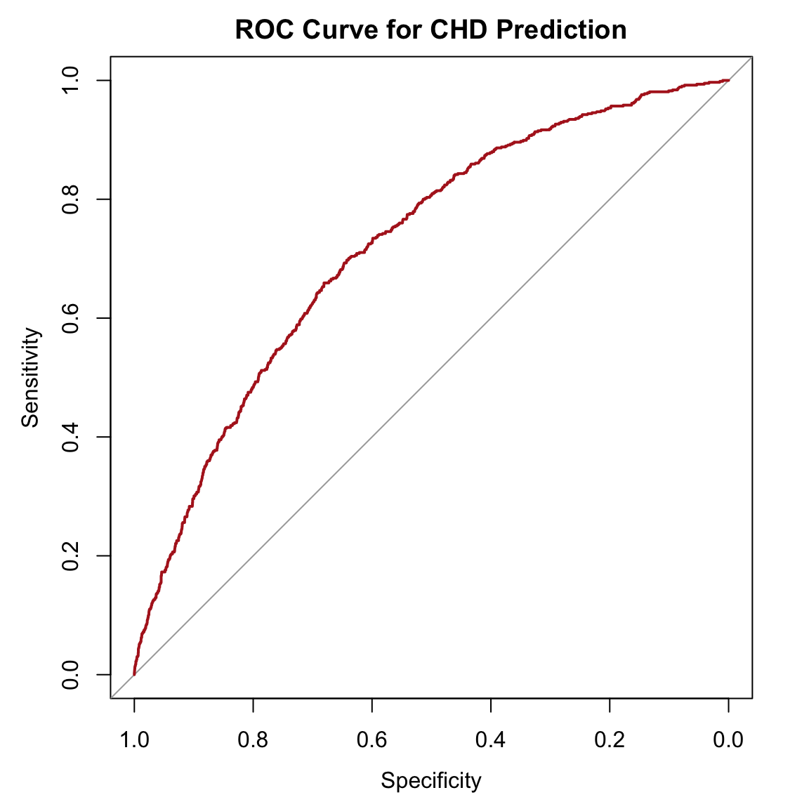

library(tidyverse)
library(this.path)
library(pROC)
setwd(this.dir())
framingham <- read_csv("../../data/framingham.csv") |>
mutate(
male = factor(male, levels = c(0,1), labels = c("Female","Male")),
currentSmoker = factor(currentSmoker, levels = c(0,1), labels = c("Non-smoker","Smoker")),
prevalentHyp = factor(prevalentHyp, levels = c(0,1), labels = c("No","Yes")),
diabetes = factor(diabetes, levels = c(0,1), labels = c("No","Yes")),
TenYearCHD = factor(TenYearCHD, levels = c(0,1), labels = c("No","Yes")),
education = factor(education, levels = 1:4,
labels = c("Some HS","HS Diploma","Some College","College Degree"))
)Day 8: Logistic Regression
SC INBRE Biostatistics Summer Intensive 2026
1 Overview
So far we have modeled continuous outcomes with linear regression. Many of the most important questions in biomedical research, however, involve binary outcomes: did the patient develop the disease, did the screening test return positive, did the treatment succeed?
Today we extend regression to binary outcomes using logistic regression. We will work through three examples using the Framingham Heart Study:
- Example 1: Simple logistic regression of
TenYearCHDonsysBP. Fitting, interpretation, and visualization. - Example 2: Multiple logistic regression with several risk factors. Adjusted odds ratios, model comparison, and selection.
- Example 3: Classification performance. ROC curves, AUC, and the sensitivity/specificity tradeoff.
2 Why Not Linear Regression?
Suppose we want to predict whether a Framingham participant will develop coronary heart disease (CHD) within 10 years, coded as 0 (no) or 1 (yes). Why can we not just run lm(TenYearCHD ~ age)?
Three problems show up immediately:
The line goes outside \([0, 1]\). A straight line has no upper or lower bound. At extreme ages, linear regression will predict probabilities below 0 or above 1, which is nonsense.
The variance is not constant. For a binary outcome, \(\text{Var}(Y) = \pi(1 - \pi)\) depends on \(\pi\). Homoscedasticity (the “E” in LINE) fails by construction.
The residuals cannot be normal. \(Y\) only takes the values 0 and 1, so residuals are bimodal. The normality assumption (“N” in LINE) fails too.
Logistic regression solves all three by modeling a transformation of the probability instead of the probability itself.
2.1 The Logit Transformation
Let \(\pi = P(Y = 1)\). The logit (log-odds) of \(\pi\) is
\[\text{logit}(\pi) = \log\!\left(\frac{\pi}{1-\pi}\right)\]
The logistic regression model assumes the log-odds is linear in the predictors:
\[\log\!\left(\frac{\pi}{1-\pi}\right) = \beta_0 + \beta_1 X_1 + \cdots + \beta_p X_p\]
Solving for \(\pi\) gives the familiar S-shaped curve:
\[\pi = \frac{\exp(\beta_0 + \beta_1 X_1 + \cdots + \beta_p X_p)}{1 + \exp(\beta_0 + \beta_1 X_1 + \cdots + \beta_p X_p)}\]
This curve is bounded between 0 and 1 for any values of the predictors. Problem solved.
3 Example 1: Simple Logistic Regression (CHD on sysBP)
3.1 The Question
Does systolic blood pressure predict whether a participant develops CHD within 10 years?
framingham |>
count(TenYearCHD) |>
mutate(percent = round(n / sum(n) * 100, 1))# A tibble: 2 × 3
TenYearCHD n percent
<fct> <int> <dbl>
1 No 3596 84.8
2 Yes 644 15.2About 15% of Framingham participants developed CHD over the follow-up. This is the baseline rate, the probability we would predict for a randomly chosen person if we had no other information.
3.2 Checking Variable Form
Before fitting, we look at how the empirical probability of CHD changes with sysBP. A loess smoother on the binary outcome gives a non-parametric estimate of \(\pi\) as a function of sysBP.
framingham |>
mutate(CHD_numeric = as.numeric(TenYearCHD) - 1) |>
ggplot(aes(x = sysBP, y = CHD_numeric)) +
geom_jitter(alpha = 0.06, height = 0.04, color = "steelblue") +
geom_smooth(method = "loess", color = "firebrick", se = TRUE, linewidth = 1) +
labs(x = "Systolic BP (mmHg)",
y = "Probability of CHD within 10 years",
title = "Empirical CHD Probability by Systolic BP",
subtitle = "Loess smoother on the binary outcome") +
theme_minimal()
The loess curve rises steadily with sysBP, suggesting that higher blood pressure is associated with higher CHD risk. The relationship looks reasonably smooth, with no sharp bends, so a single linear term on the log-odds scale is plausible.
3.3 Fitting the Model
We fit logistic regression with glm(). Note three changes compared to lm():
- The function is
glm()instead oflm(). - We specify
family = binomial(link = "logit")(or justfamily = binomial, since logit is the default). - The output is on the log-odds scale.
chd_simple <- glm(TenYearCHD ~ sysBP,
data = framingham,
family = binomial(link = "logit"))
summary(chd_simple)
Call:
glm(formula = TenYearCHD ~ sysBP, family = binomial(link = "logit"),
data = framingham)
Coefficients:
Estimate Std. Error z value Pr(>|z|)
(Intercept) -5.000050 0.255855 -19.54 <2e-16 ***
sysBP 0.024057 0.001801 13.36 <2e-16 ***
---
Signif. codes: 0 '***' 0.001 '**' 0.01 '*' 0.05 '.' 0.1 ' ' 1
(Dispersion parameter for binomial family taken to be 1)
Null deviance: 3612.2 on 4239 degrees of freedom
Residual deviance: 3433.3 on 4238 degrees of freedom
AIC: 3437.3
Number of Fisher Scoring iterations: 4Reading the output:
- Intercept (\(\hat\beta_0\) = -5): The log-odds of CHD when
sysBP = 0. Not directly meaningful because nobody has zero blood pressure, but it sets the level of the line. - sysBP (\(\hat\beta_1\) = 0.0241): For each additional 1 mmHg of systolic BP, the log-odds of CHD increase by 0.0241.
- z-value and p-value: Same role as the t-test in linear regression. Strong evidence that
sysBPis associated with CHD risk.
The log-odds scale is hard to interpret. Exponentiating converts it to odds ratios, which most people find easier.
3.4 Odds Ratios and Confidence Intervals
exp(cbind(OR = coef(chd_simple), confint(chd_simple))) OR 2.5 % 97.5 %
(Intercept) 0.006737607 0.004065633 0.01108845
sysBP 1.024349119 1.020751601 1.02798641Reading the odds ratios:
- For each additional 1 mmHg of systolic BP, the odds of CHD are multiplied by 1.024. A 1 mmHg increase is small, so the OR is close to 1.
- The CI of (1.021, 1.028) does not include 1, so we reject the null of no association.
A 1 mmHg increase is a trivial change clinically. To make this more interpretable, rescale to a 20 mmHg increase (roughly one standard deviation):
exp(20 * coef(chd_simple)["sysBP"]) sysBP
1.617931 exp(20 * confint(chd_simple)["sysBP", ]) 2.5 % 97.5 %
1.50800 1.73679 A 20 mmHg increase in systolic BP roughly doubles the odds of developing CHD over 10 years. That number is much more interpretable.
Important
Always rescale the OR to a unit that means something. Reporting “OR = 1.02 per mmHg” is technically correct but conveys almost nothing. Reporting “OR = 2.05 per 20 mmHg” conveys the actual size of the effect.
3.5 Predicted Probabilities
predict() returns the linear predictor (log-odds) by default. Add type = "response" to get probabilities.
framingham <- framingham |>
mutate(p_chd = predict(chd_simple, type = "response"))
framingham |>
select(sysBP, TenYearCHD, p_chd) |>
slice_sample(n = 6)# A tibble: 6 × 3
sysBP TenYearCHD p_chd
<dbl> <fct> <dbl>
1 147 Yes 0.188
2 123 Yes 0.115
3 125 No 0.120
4 104 No 0.0760
5 174 No 0.307
6 153 No 0.211 To predict for new individuals, build a small tibble with the relevant predictors and pass it to predict():
new_subjects <- tibble(sysBP = c(110, 130, 150, 180))
new_subjects |>
mutate(p_chd = predict(chd_simple, newdata = new_subjects, type = "response"))# A tibble: 4 × 2
sysBP p_chd
<dbl> <dbl>
1 110 0.0868
2 130 0.133
3 150 0.199
4 180 0.339 At sysBP = 110, the predicted CHD probability is about 8%. At sysBP = 180, it climbs to about 28%. A 70 mmHg increase in BP roughly triples the predicted risk.
3.6 Visualizing the Fitted Curve
framingham |>
mutate(CHD_numeric = as.numeric(TenYearCHD) - 1) |>
ggplot(aes(x = sysBP, y = CHD_numeric)) +
geom_jitter(alpha = 0.06, height = 0.04, color = "steelblue") +
geom_smooth(method = "glm", method.args = list(family = "binomial"),
color = "firebrick", se = TRUE, linewidth = 1) +
labs(x = "Systolic BP (mmHg)",
y = "Probability of CHD within 10 years",
title = "Fitted Logistic Regression Curve",
subtitle = "Red curve: fitted logistic model; shaded band is 95% CI for the mean") +
theme_minimal()
The fitted logistic curve rises smoothly from near 0 at low BP to about 0.4 at very high BP. The curve is bounded between 0 and 1 by construction, unlike a linear regression line.
3.7 A Note on Categorizing Continuous Predictors
A common modeling mistake is to chop a continuous variable like age or BP into categories before fitting. The same warning we issued for linear regression applies here:
- Categorization throws away information.
- It assumes a step change at the cutpoint rather than a smooth effect.
- It reduces statistical power.
To illustrate, here is what happens if we wrongly treat sysBP as a factor:
framingham_bad <- framingham |>
mutate(sysBP_factor = cut(sysBP,
breaks = c(80, 120, 140, 160, 300),
labels = c("<120", "120-140", "140-160", "160+"),
include.lowest = TRUE))
bad_model <- glm(TenYearCHD ~ sysBP_factor,
data = framingham_bad,
family = binomial)
AIC(chd_simple, bad_model) df AIC
chd_simple 2 3437.314
bad_model 4 3460.491The continuous model has a lower AIC because it captures the smooth dose-response without spending degrees of freedom on dummy variables. Keep continuous variables continuous unless there is a strong reason to categorize.
4 Example 2: Multiple Logistic Regression
In practice we rarely have a single predictor. The real value of regression is the ability to adjust for multiple risk factors simultaneously.
4.1 The Question
How do age, smoking status, blood pressure, cholesterol, and diabetes jointly predict CHD risk? Which factors remain important after adjusting for the others?
4.2 Checking Variable Form for Each Predictor
Before fitting a multivariable model, inspect each continuous predictor’s relationship with the outcome.
framingham |>
mutate(CHD_numeric = as.numeric(TenYearCHD) - 1) |>
pivot_longer(cols = c(age, sysBP, totChol, BMI),
names_to = "predictor", values_to = "value") |>
ggplot(aes(x = value, y = CHD_numeric)) +
geom_jitter(alpha = 0.05, height = 0.04, color = "steelblue") +
geom_smooth(method = "loess", color = "firebrick", se = TRUE, linewidth = 1) +
facet_wrap(~ predictor, scales = "free_x") +
labs(x = "Predictor value", y = "Probability of CHD",
title = "Empirical CHD Probability by Each Predictor") +
theme_minimal()
age and sysBP show clear monotonic increases. totChol shows a weaker positive trend. BMI rises and then flattens (worth keeping in mind, but not strong enough to require a spline for this example).
4.3 Fitting the Full Model
We are going to restrict to complete cases on all the variables we plan to use before fitting anything. This way the data will have the same observations for all models.
For example, there are some missing BMI values. If we don’t do this step and we were to remove BMI from the predictor list, then we would have a different dataset.
vars_used <- c("TenYearCHD", "age", "currentSmoker", "sysBP",
"totChol", "diabetes", "BMI")
framingham_cc <- framingham |>
drop_na(all_of(vars_used))
nrow(framingham) - nrow(framingham_cc) # how many rows were dropped[1] 68chd_full <- glm(TenYearCHD ~ age + currentSmoker + sysBP + totChol +
diabetes + BMI,
data = framingham_cc,
family = binomial)
summary(chd_full)
Call:
glm(formula = TenYearCHD ~ age + currentSmoker + sysBP + totChol +
diabetes + BMI, family = binomial, data = framingham_cc)
Coefficients:
Estimate Std. Error z value Pr(>|z|)
(Intercept) -8.216150 0.476457 -17.244 < 2e-16 ***
age 0.065593 0.006055 10.834 < 2e-16 ***
currentSmokerSmoker 0.554136 0.095849 5.781 7.41e-09 ***
sysBP 0.015600 0.002086 7.478 7.55e-14 ***
totChol 0.001228 0.001016 1.208 0.22714
diabetesYes 0.727067 0.221828 3.278 0.00105 **
BMI 0.014302 0.011255 1.271 0.20380
---
Signif. codes: 0 '***' 0.001 '**' 0.01 '*' 0.05 '.' 0.1 ' ' 1
(Dispersion parameter for binomial family taken to be 1)
Null deviance: 3524.3 on 4171 degrees of freedom
Residual deviance: 3193.2 on 4165 degrees of freedom
AIC: 3207.2
Number of Fisher Scoring iterations: 54.4 Adjusted Odds Ratios
exp(cbind(OR = coef(chd_full), confint(chd_full))) |>
round(3) OR 2.5 % 97.5 %
(Intercept) 0.000 0.000 0.001
age 1.068 1.055 1.081
currentSmokerSmoker 1.740 1.443 2.102
sysBP 1.016 1.012 1.020
totChol 1.001 0.999 1.003
diabetesYes 2.069 1.328 3.176
BMI 1.014 0.992 1.037Interpretation of each coefficient:
- age: Each additional year of age multiplies the odds of CHD by about 1.06, holding the other variables constant. Over a decade, that’s \(1.06^{10} \approx 1.8\), so the odds roughly double.
- currentSmokerSmoker: Smokers have about 50% higher odds of CHD than non-smokers of the same age, BP, cholesterol, BMI, and diabetes status. This is the “Smoker vs Non-smoker” contrast, with non-smokers as the reference.
- sysBP: Per 1 mmHg, the OR is just above 1. The 20-mmHg-scaled OR is 1.37.
- totChol: Per mg/dL, the OR is essentially 1. Scaled to a 40 mg/dL change, the OR becomes 1.05.
- diabetesYes: Diabetic participants have substantially higher CHD odds even after adjusting for the other risk factors.
- BMI: The CI typically includes 1 in this dataset, meaning BMI does not add much once the other variables are accounted for.
Important
The coefficient for sysBP in the multiple model is smaller than in the simple model from Example 1. This is because part of the sysBP effect we saw earlier was actually attributable to age (older participants tend to have higher BP and more CHD). Once we adjust for age, the unique contribution of sysBP is smaller. This is the entire point of multivariable regression.
4.5 Comparing Nested Models: Likelihood Ratio Test
To test whether a group of predictors adds anything jointly, use the likelihood ratio test (LRT), the logistic-regression analog of the partial F-test.
# Reduced model: drop diabetes and BMI
chd_reduced <- glm(TenYearCHD ~ age + currentSmoker + sysBP + totChol,
data = framingham_cc,
family = binomial)
anova(chd_reduced, chd_full, test = "LRT")Analysis of Deviance Table
Model 1: TenYearCHD ~ age + currentSmoker + sysBP + totChol
Model 2: TenYearCHD ~ age + currentSmoker + sysBP + totChol + diabetes +
BMI
Resid. Df Resid. Dev Df Deviance Pr(>Chi)
1 4167 3205.5
2 4165 3193.2 2 12.29 0.002144 **
---
Signif. codes: 0 '***' 0.001 '**' 0.01 '*' 0.05 '.' 0.1 ' ' 1The LRT compares the deviances of the two models. A small p-value means the dropped variables (diabetes and BMI) collectively add useful information. A large p-value would suggest we can simplify.
Use anova(reduced, full, test = "LRT") whenever you want to test:
- A multi-level categorical predictor (all its dummy variables jointly).
- A polynomial or spline expansion of a variable.
- A group of related predictors entering or leaving together.
4.6 Model Selection with AIC
For exploratory model building, AIC-based stepwise selection often works well as a starting point.
chd_step <- step(chd_full, direction = "both", trace = 0)
summary(chd_step)
Call:
glm(formula = TenYearCHD ~ age + currentSmoker + sysBP + diabetes,
family = binomial, data = framingham_cc)
Coefficients:
Estimate Std. Error z value Pr(>|z|)
(Intercept) -7.706964 0.372289 -20.702 < 2e-16 ***
age 0.066225 0.005990 11.056 < 2e-16 ***
currentSmokerSmoker 0.535994 0.094861 5.650 1.6e-08 ***
sysBP 0.016600 0.001991 8.335 < 2e-16 ***
diabetesYes 0.750648 0.221032 3.396 0.000684 ***
---
Signif. codes: 0 '***' 0.001 '**' 0.01 '*' 0.05 '.' 0.1 ' ' 1
(Dispersion parameter for binomial family taken to be 1)
Null deviance: 3524.3 on 4171 degrees of freedom
Residual deviance: 3196.3 on 4167 degrees of freedom
AIC: 3206.3
Number of Fisher Scoring iterations: 5AIC(chd_full, chd_step) df AIC
chd_full 7 3207.249
chd_step 5 3206.321The stepwise procedure typically drops BMI from this model. The selected model has a slightly lower AIC than the full model, suggesting a small improvement after removing the weakest predictor.
Tip
A warning about stepwise selection. AIC-based stepwise procedures are a reasonable exploratory tool but are known to over-fit and produce overly confident p-values on the selected variables. For inference about a specific scientific question, decide on your model based on subject-matter knowledge, not on stepwise output. For prediction, methods like LASSO (Day 14) are usually preferable.
4.7 Final Model and Its Odds Ratios
chd_final <- chd_step
exp(cbind(OR = coef(chd_final), confint(chd_final))) |>
round(3) OR 2.5 % 97.5 %
(Intercept) 0.000 0.000 0.001
age 1.068 1.056 1.081
currentSmokerSmoker 1.709 1.420 2.060
sysBP 1.017 1.013 1.021
diabetesYes 2.118 1.362 3.246This is the table you would report in a paper, after rescaling continuous predictors to clinically meaningful units.
5 Example 3: Classification and Predictive Performance
Logistic regression gives a predicted probability \(\hat\pi_i\) for each subject. To turn this into a yes/no classification, we pick a threshold \(\pi_0\) and classify:
\[\hat Y_i = \begin{cases} 1 & \text{if } \hat\pi_i > \pi_0 \\ 0 & \text{if } \hat\pi_i \le \pi_0 \end{cases}\]
The threshold is a choice, not a property of the model. Different thresholds produce different tradeoffs between sensitivity and specificity.
5.1 Generating Predicted Probabilities
framingham_cc <- framingham_cc |>
mutate(p_chd_final = predict(chd_final, type = "response"))
framingham_cc |>
select(TenYearCHD, p_chd_final) |>
summary() TenYearCHD p_chd_final
No :3547 Min. :0.02162
Yes: 625 1st Qu.:0.07270
Median :0.11854
Mean :0.14981
3rd Qu.:0.19485
Max. :0.80664 The predicted probabilities range from very low (about 1%) to relatively high (about 65%). Most people are below 0.5, which makes sense: only 15% of the cohort actually develops CHD.
5.2 Confusion Matrix at Threshold = 0.5
threshold_05 <- 0.5
framingham_cc <- framingham_cc |>
mutate(pred_class_05 = factor(if_else(p_chd_final > threshold_05, "Yes", "No"),
levels = c("No", "Yes")))
table(Predicted = framingham_cc$pred_class_05, Actual = framingham_cc$TenYearCHD) Actual
Predicted No Yes
No 3520 597
Yes 27 28At a threshold of 0.5, almost no one gets classified as a predicted CHD case. The model is right about most non-cases but misses almost all the actual cases. A 0.5 threshold is rarely a good default when the event is rare.
5.3 Confusion Matrix at Threshold = 0.15 (the Event Rate)
threshold_15 <- 0.15
framingham_cc <- framingham_cc |>
mutate(pred_class_15 = factor(if_else(p_chd_final > threshold_15, "Yes", "No"),
levels = c("No", "Yes")))
table(Predicted = framingham_cc$pred_class_15, Actual = framingham_cc$TenYearCHD) Actual
Predicted No Yes
No 2398 213
Yes 1149 412Lowering the threshold to 0.15 means we now flag many more people as predicted CHD cases. Sensitivity goes up; specificity goes down. The right tradeoff depends on the relative cost of missing a true case versus a false alarm.
5.4 Sensitivity, Specificity, PPV, NPV
For a given confusion matrix, four summary numbers describe performance:
tab <- table(Predicted = framingham_cc$pred_class_15, Actual = framingham_cc$TenYearCHD)
tab Actual
Predicted No Yes
No 2398 213
Yes 1149 412TP <- tab["Yes", "Yes"]
FP <- tab["Yes", "No"]
TN <- tab["No", "No"]
FN <- tab["No", "Yes"]
tibble(
Sensitivity = TP / (TP + FN), # of actual CHD cases, fraction we caught
Specificity = TN / (TN + FP), # of actual non-cases, fraction we cleared
PPV = TP / (TP + FP), # of flagged cases, fraction that are true
NPV = TN / (TN + FN) # of cleared cases, fraction that are true
) |> round(3)# A tibble: 1 × 4
Sensitivity Specificity PPV NPV
<dbl> <dbl> <dbl> <dbl>
1 0.659 0.676 0.264 0.9185.5 ROC Curve and AUC
The ROC curve plots sensitivity against (1 - specificity) for every possible threshold. It summarizes the full sensitivity-specificity tradeoff in one picture.
The AUC (area under the ROC curve) is a single-number summary. It can be interpreted as the probability that the model assigns a higher predicted probability to a randomly chosen CHD case than to a randomly chosen non-case.
roc_obj <- roc(framingham_cc$TenYearCHD, framingham_cc$p_chd_final,
levels = c("No", "Yes"), direction = "<")
plot(roc_obj, col = "firebrick", lwd = 2,
main = "ROC Curve for CHD Prediction")
auc(roc_obj)Area under the curve: 0.7211The AUC for this model is around 0.72, which is in the “acceptable” range for clinical risk prediction. Models with AUC below 0.6 rarely provide clinical value; models above 0.8 are excellent for many applications.
| AUC | Discriminative ability |
|---|---|
| \(\approx\) 0.5 | No discrimination (coin flip) |
| 0.6 – 0.7 | Poor |
| 0.7 – 0.8 | Acceptable |
| 0.8 – 0.9 | Excellent |
| > 0.9 | Outstanding |
Warning
A caution on AUC values reported from the training data. The AUC we just computed was evaluated on the same data used to fit the model. This is optimistic: it overestimates how well the model will perform on new data. For an honest assessment, evaluate on held-out data or use cross-validation (Day 7).
5.6 Choosing a Threshold
The threshold is a clinical decision, not a statistical one. It depends on the cost of false positives versus false negatives.
- For CHD screening: Missing a true case (false negative) means a patient doesn’t get preventive treatment for a serious condition. False positives mean unnecessary follow-up. Most screening programs accept many false positives to catch as many true cases as possible, so the threshold is set low (high sensitivity).
- For a one-time, costly intervention: The threshold is set higher so that only people very likely to benefit are treated.
You can use the ROC object to find the threshold that maximizes some criterion of interest:
# Youden's J statistic: maximize sensitivity + specificity - 1
coords(roc_obj, "best", best.method = "youden") threshold specificity sensitivity
1 0.1398789 0.6425148 0.6976This returns the threshold that achieves the best balance of sensitivity and specificity by Youden’s J criterion. The clinician’s job is to decide whether that balance is the right one for the application.
6 Summary
Logistic regression extends the regression framework to binary outcomes. The model has the same shape as linear regression but on the log-odds scale.
Three key skills from this lecture:
Fit and interpret. Use
glm()withfamily = binomial. Report exponentiated coefficients (odds ratios), rescaled to clinically meaningful units, with confidence intervals.Compare and select models. Use
anova(reduced, full, test = "LRT")for nested model tests. UseAIC()orstep()for exploratory selection, but recognize their limitations.Evaluate predictive performance. Predicted probabilities turn into classifications via a threshold. ROC curves and AUC summarize the full tradeoff. The choice of threshold is application-specific.
Tomorrow we extend regression in a different direction: instead of binary outcomes, we will look at time-to-event outcomes (survival analysis), where we track not just whether the event happened but when.